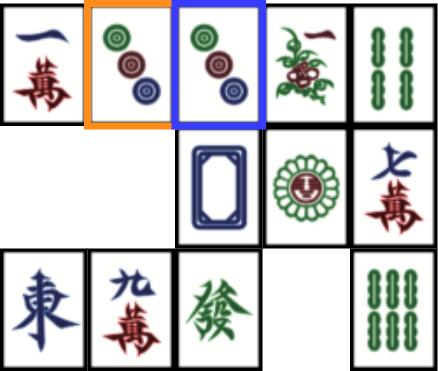

Mahjong Game
Presentation
Goal
Mahjong is a puzzle game where the player must find tile pairs. Tile pairs are valid when tiles are separated by a maximum of two shifts.
For instance:
// Valid paths
...............
..#~~~~~#...... // no shift and empty tiles
...............
...............
...............
...............
..#~~~~~+...... // one shift
........|......
........#......
...............
+~~~~~~~~~+ // outside the board is allowed
..|.........|..
..|.........#.. // two shifts
..#............
...............
...............
// Invalid paths
...............
..#.....#~~+... // three shifts
..|........|...
..+~~~~~~~~+...
...............
...............
..#............ // no empty tiles
...............
..........#....
...............
Where:
#represents targeted tiles.represents tiles different from targeted tiles+represents a shift~and|represents the path which separates targeted tiles
Game specifications
The games has three levels of difficulty:
- Normal : puzzle is easy to solve (solution guaranteed)
- Hard: puzzle is hard to solve (solution guaranteed)
- Impossible (random) (solution not guaranteed)
The player can go back until maximum 10 steps (previous moves are kept in memory).
The player has a maximum of 10 hints during a game, where each hint gives him a valid move to play.
The player can save the game into a file and load a game from a file (files do not need specific suffix).
Game structure
.
├── assets // assets for `README.md`
├── LICENSE
├── pom.xml // Maven project description
├── README.md
└── src
├── main
│ └── java
│ ├── game // Game files
│ │ ├── Board.java // Set of methods for generating a board
│ │ ├── Game.java // Set of methods for game rules
│ │ ├── Solver.java // Set of methods to solve a board
│ │ ├── Tile.java // Set of methods for manipulating a tile
│ │ └── Vec2D.java // 2D vector
│ └── ui // User Interface files
│ ├── GUI.java // Graphical User Interface
│ └── TUI.java // Text User Interface
└── test
└── java
└── game
├── TileTest.java
└── Vec2DTest.javaIn game/Board.java:
generateSolvableStaticLine()is based on line methodsgenerateSolvableStatic()generates a random solvable board. Broadly speaking, it tries to solve the board by fixing it when it is not.
In game/Solver.java:
nextMergefinds and returns a pair of coordinates to play a valid move. This method is the core ofSolverand it calls other methods.
In game/Tile.java:
all()allows to generate an array of all tile typesnumber()allows to generate a array of disponibilities by tile type
More details
Solver.validMerge(Vec2D a, Vec2D b)
We want to verify if a path exists between two tiles. First and foremost, we check if two tiles can be paired; if it’s the case, we continue the program, else we returns false (see Solver.validMerge(Vec2D a, Vec2D b)):
public boolean validMerge(Vec2D a, Vec2D b) {
// Checks if the tiles are equivalent
if (!this.getCell(a).isPair(this.getCell(b))) {
return false;
}
// continue the program
}In a second phase, an array sides contain all directions and an array path will keep the borrowed path over iterations. The path begins with the vector a. If the vector b is found in the closest neighbors (defined by directions in sides), it returns true else the program continues.
// Possible directions
Vec2D sides[] = Board.sides();
// Path taken to reach to the current step. It works like a stack.
// Array of directions taken to reach to each step
ArrayList<Integer> path = new ArrayList<>();
// Variables of the current step
int side = 0; // Testing direction
Vec2D pos = a; // Current position
int shifts = 0; // Number of shifts in the current pathNow, it starts with a direction and a path of empty cells is stacked until a deadlock or the destination is found, in which case, the program is finished. The direction is changed if we want an empty cell side by side the actual position of the program.
while (true) {
boolean noSideFound = true;
// Checks if B is in the nearest neighbors
for (int i = side; i < sides.length; i++) {
Vec2D next = pos.add(sides[i]);
int lastdir = path.size() - 1;
if (
next.equals(b) && (
shifts < 2 || (shifts <= 2 && lastdir >= 0 && i == path.get(lastdir))
)
) {
return true;
}
}
for (; side < sides.length; side++) {
Vec2D next = pos.add(sides[side]);
int max = this.SIZE + 1;
if (next.x > max || next.y > max || next.x < 0 || next.y < 0) {
continue;
}
Tile t = this.getCell(next);
if (t.isFree()) {
if (shifts < 2 || (path.size() > 0 && side == path.get(path.size() - 1))) {
// Count the shift
if (path.size() > 0 && side != path.get(path.size() - 1)) {
shifts++;
}
// Stacks the new direction
path.add(side);
pos = next;
side = 0;
noSideFound = false;
break;
}
}
}
// ...
}Otherwise, the path is unstacked until an empty cell, with more than one empty neighbor, is found. A new direction is then defined and chosen. It is repeated until the last step but in a new direction.
while (true) {
// ...
if (noSideFound) {
do {
if (path.size() <= 0) {
return false;
} // If the path is empty, there is no possible path
// Unstacks the path
int last = path.size() - 1;
side = path.get(last);
pos = pos.sub(sides[side]);
path.remove(last);
// Uncounts the shift
if (path.size() > 0 && side != path.get(path.size() - 1)) {
shifts--;
}
side++; // Checks if the next side
} while (side >= sides.length);
}
}By following these process, all possible paths are checked and a path with a maximum of two shifts can be found if exists.
generateSolvableStatic()
When I was wondering if it is possible to make a solvable generation but also random, two ideas came to my mind.
The first one is simple: progress in the resolution of the board until reaching a step where there are no possible next move and then managing the last tiles in order to be able to continue the resolution. For that, some automatic resolution functions must exist.
Tiles cannot be paired: by starting with the cell in orange, the second cell in blue
After swapping cells, there is a new possible move and the resolution can continue.
At the same time, each tile swap is taken back to the initial board. The tiles which are not paired together stay always at the same position during the resolution (no tile fall by gravity). The tiles, which were swapped, do not make the board solvable at this step.
When the resolution is finished, the board is solvable.
generateSolvableStatic() follows these steps and is based on Solver.nextMerge() to move forward the resolution.
generateStaticLine()
This method is the second one, designed to be faster for generation. It creates easier boards to solve.
This method involves to place two tiles in order to be aligned. They are going to be the board base. Then, for each new placed tile, it must be placed with a tile already placed and its pair will be placed on the same straight line in relation to the first tile and near an already placed tile.

In this example, there are orange tiles, blue tiles and green tiles. By iterating in this manner, it is guaranteed that a solution exists when the board is completely generated.
When the board is generated, there are some chances to finish in a specific case where there are only two cells to complete. The generation must be restarted until a complete board is found.
Set of methods
Here is the set of methods for generating a board. generateStaticLine() is the main method. generateFirstDirection(Vec2D pos) allows to generate randomly a new direction. If pos is in a corner, two directions are possible, if pos is on a border, three directions are possible, if pos is in the middle of the board, four directions are possible. generatingFirstMovement(Vec2D, pos, int direction) allows to find the position of a tile pair in a random manner given the specified direction in relation with the position of the initial tile.
// Build a board with the line method
public void generateSolvableStaticLine() { ... }
// Here, all methods are linked to generateStaticLine
// Generates a random direction (the first one)
int generatingFirstDirection(Vec2D pos) { ... }
// Generates a random position given the specified direction (the first one)
Vec2D generatingFirstMovement(Vec2D pos, int direction) { ... }
// Useful for the second placed tile
// Method to distinguish between "generic" tiles and unique ones
// If generic tile: unmodified index
// If unique tile: returns the index of the same *family* and yet available
int disponibilities(int index, int[] dispo) { ... }
// Returns the opposite direction
int opposedDirection(int direction) { ... }
// Returns true if filled cells around the (non-empty) position exist
boolean checkingAroundCase(Vec2D pos, int direction) { ... }
// Generates a distance on which we search a position of the second tile
ArrayList<Integer> generatingDistance(Vec2D pos, int direction) { ... }
// Generates a position which checks the line method
int[] generatingNewPosition(ArrayList<Vec2D> insert) { ... }
// Generates a "filled" direction on the specified position
int generatingNewDirection(Vec2D pos) { ... }
// Generates a pair position given a specified direction and a specified position
Vec2D generatingEvenPosition(Vec2D pos, int direction) { ... }
// Returns the direction array directly accessible from a cell
public static Vec2D[] sides() { ... }disponibilities(int index, int[] dispo) returns an index. Since in the game, there are tiles which are available in an unique manner, and tiles which are four times available, this method evaluates if when a season or a flower (first placed tile) is placed, then its pair will be anoter flower or season*.
opposedDirection(int direction) returns the opposite direction of the specified argument.
checkingAroundCase(Vec2D pos, int direction) checks if some filled cells exist around the position pos.
generatingDistance(Vec2D pos, int direction) generates a distance given the specified direction and the position pos. In other words, for a position \((x, y)\) and a direction, the tested positions approach the border or are futher the border.
generatingNewPosition(ArrayList<Vec2D> insert) is a method which chooses randomly a already placed tile and checks if there is an empty tile around this tile. In an empty tile is found, it checks if a direction exists where the tile will be placed.
generatingNewDirection(Vec2D pos) allows to find a random direction which guarantees that:
- an empty cell exists or an cell is placed where the future tile pair should be (which is not on the border)
- if an empty cell exists, it must be placed side by sibe with a filled cell
generatingEvenPosition(Vec2D pos, int direction) returns the coordinates (Vec2D) of the tile pair, knowing that it is chosen randomly and placement criteria are guaranteed.
Solver explanation
The solver allows to generate a board, to test generated boards and game rules. In fact, it is hard to solve correctly a board if the rules are wrong or incomplete.
The solver is used moveover for the generation of hints during a game. It is the through itself that a game runs through, event in the GUI.
The most useful method is nextMerge(). It works according two modes:
nextMergeNear: simple iteration over the board to find a pair of adjacente tilesnextMergeDistant: slow method which searchs a pair of adjacente tiles or not. For every tile on the board, it searchs its pairs and tests the paths between each tile and the pair in question.
Other algorithms were tested but were less optimized in the end if we considered the complexity of access number of the board.
To solve a board from zero, it is enough, in almost all cases, to apply systematically the suggested move by the solver until there is no tile on the board.